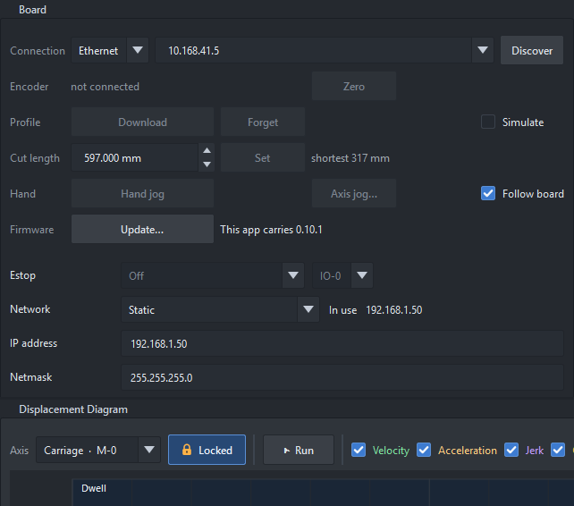
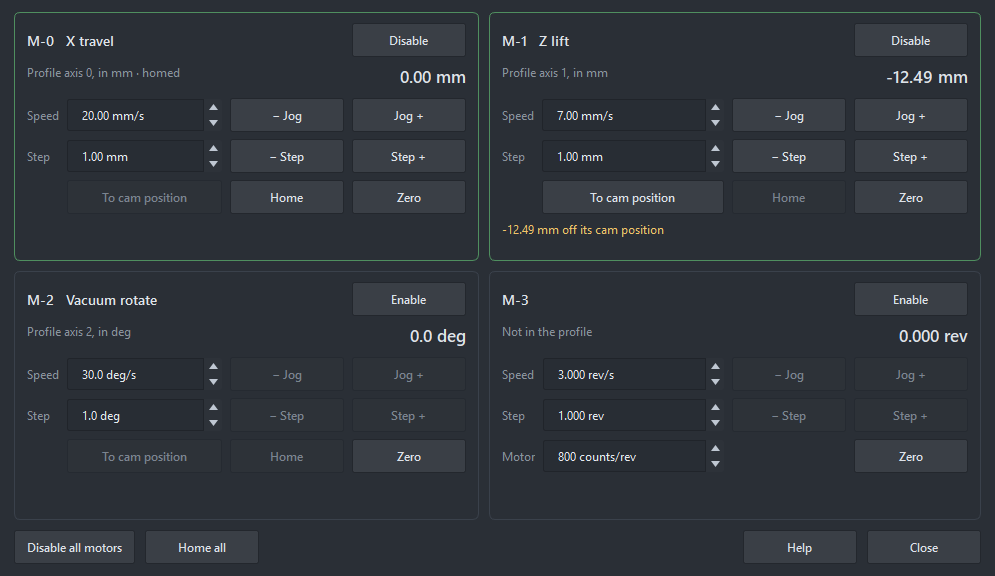
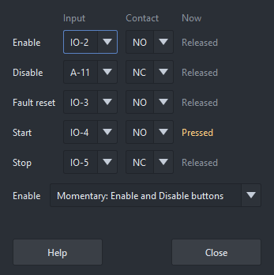
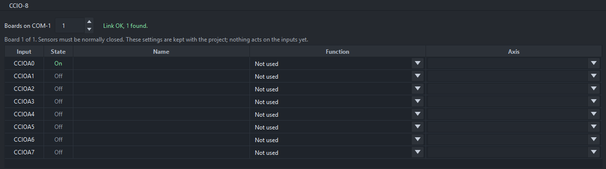
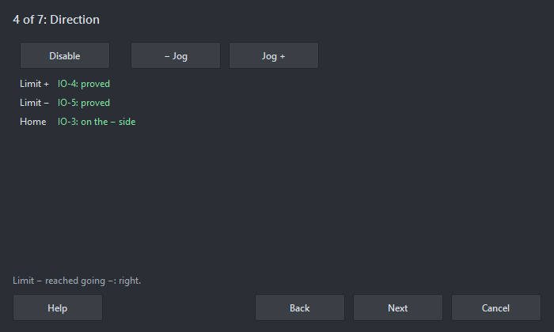
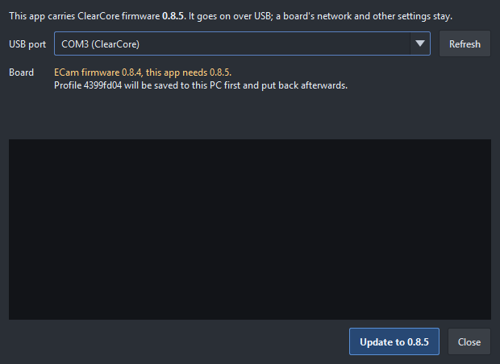

The ClearCore runs the profile itself from flash (firmware ECam_Firmware); the app only talks to it
to upload, start, stop and watch. The board strip at the bottom of the window runs it, and the Board page in
the project tree holds the rest.
Open the Board page, then:
The board strip at the foot of the window.
Always in view, whatever the tree has open. The light is grey when not connected, green when connected, amber when a PLC has control, and red on a fault.
| Button | What it does |
|---|---|
| Connect | Connects to the board chosen on the Board page, or disconnects. |
| Upload | Sends the project. The board keeps it in flash and loads it at power-up, motors disabled. |
| Enable / Disable | The profile's motors. Clear fault appears while one is latched. |
| Start | Crank axes engage (a driven crank ramps up) and the timeline arms. Trigger appears with timeline axes and starts the armed timeline. |
| Stop / Abort | Stop: a timeline finishes its cycle and rests at its end, back where the next Start begins; Stop again while it finishes ramps it to rest at once. A crank ramps to rest. Abort stops at once. After a stop part-way through a timeline's cycle, Start waits until its axes are back at their start: Hand jog the timeline to 0, or To cam position. |
The status beside the light shows the board's state, whether its profile is this project, the outputs that are on, and warns when the profile is not in flash or no estop is set. With a PLC connected over EtherNet/IP it shows PLC … connected, or PLC … in control: the board then refuses Upload, Enable, Start and the rest, and those buttons go grey; Stop, Abort and Disable still work (see PLC (EtherNet/IP)).

The Board page: connection, encoder, profile, hand jog, firmware, estop and network.
| Row | What it does |
|---|---|
| Connection | Ethernet or USB, the address or COM port, and Discover. |
| Encoder | The live count (encoder master), in revolutions and, in cut-length mode, mm of line. Zero measures from here (in the app only). |
| Sim encoder | While simulating with an encoder master: a speed and Run / Stop; the board follows a simulated count. |
| Profile | Download opens the board's project. Forget erases the stored copy. Tick Simulate to run without stepping the motors or switching outputs. |
| Cut length | Cut-length mode: the finished piece length and Set (from the next cut); the length being cut, the next and the shortest. |
| Timeline | Trigger on Start makes Start fire the timeline too, and what the timeline is doing. |
| Hand | Hand jog: drag the cam or scrub the diagram and the board's master goes there with every motor following its profile. Crank → 0°. Axis jog… moves each axis on its own (below). Follow board moves the cursor with the board. |
| Firmware | The board's firmware against this app's, and Update… (see Updating the firmware). |
Axis jog… opens a card for each motor connector, M-0 to M-3, with or without a profile on the board. The ClearCore steps the motors, as it does for the cam: the motors' USB isn't used.

X travel enabled and homed; Z lift jogged 12.49 mm off its cam position; Vacuum rotate disabled; M-3 has no axis in the profile.
The cam engages from wherever the motors are. So after an axis has been jogged, Start and Hand jog wait until it is back on its cam position: its card says how far off it is. Move it back, or zero it where it belongs. If you press Start anyway, the Workbench lists every axis that is off and offers Move to cam positions: it moves them back one at a time, M-0 first, each at its Axis jog speed, and leaves Start to you. The motors must be enabled (or the board in simulate). A gear or an open profile has no fixed place and is never held up.
Nothing in the panel works while a cam runs, waits on its trigger, or hand jogs, while the PLC has control, or with a fault latched. The panel then shows why, with Stop and Disable all motors, which always work. The board can't tell where a motor really is: after a power cycle or a new profile it takes every axis to be at the profile's start.
The Estop row at the top right of the Board page sets the board's estop: Off, Fault when low (a normally closed estop, or a jumper to 24 V, holds its input high) or Fault when high, and its input, any of IO-0..A-12 (A-9 unless you pick another). Beside it, what that input reads now, and whether that is OK or open with the setting chosen, so you can check the wiring before turning it on. It saves on the board at once, over USB or Ethernet, with every motor disabled; turning it off asks first. The input list greys the pins this project uses, and the board refuses one its profile uses (an output, the trigger, the Encoder Adapter's DI-6..DI-8 with an encoder master). An open estop disables the motors and latches a fault, and enable is refused until it closes.
A machine run without the Workbench or a PLC needs its own buttons. Panel › Operator inputs… on the Board page puts them on the ClearCore's inputs:

A panel with all five; Start is being pressed. Disable and Stop are wired normally closed.
| Enable | Enables the motors of the job on the board, as Enable. |
| Disable | Disables them, as Disable. It always works, even while the PLC has control. Wire it normally closed: a broken wire then disables. |
| Fault reset | Clears a latched fault, as Clear fault. |
| Start | As Start. With a timeline whose trigger is Command it triggers it too: a panel has no Trigger button. |
| Stop | As Stop: a timeline finishes its cycle; pressed again, it stops at once. It always works. Wire it normally closed. |
Each is an input or Off, with its contact: NC is pressed when the input opens, NO when it closes. Enable is either momentary (an Enable button and a Disable button) or maintained (a switch: on enables, off disables). The window shows each input's state, and greys the inputs the job uses, the estop's and the other operator inputs'.
These are the board's settings, like the estop: they stay with the board whatever job it runs, and change only with the motors disabled and nothing moving. The board refuses a job that uses an operator input's pin, and the Workbench keeps those pins off the Inputs page (Operator: Enable), the trigger list, the Outputs and Waits pages and the switch wizard, remembering them from the last board it saw.
The right of the Board page shows the board's network settings once connected, and the address it is using now. To change them, connect over USB:
ecam- and the last 3 bytes of the MAC.They can be changed with the motors disabled, nothing moving and no PLC in control. The app checks them first: a bad address, a mask with holes or a gateway on another subnet can't be applied, and the reason shows beside the button.
Why USB only: a new address would take away the Ethernet link it was set on. USB reaches a board whatever its address, so it is also the way back to a board on the wrong network. A PLC or EtherNet/IP tool can change them too (see PLC (EtherNet/IP)).
The restart drops any PLC connection. It comes back by itself if the board keeps the address the PLC is set to; otherwise change the PLC's setting to match.
The estop. Until one is wired and set, the status line says no estop. Set it with Estop on the Board page.
Inputs in the project tree sets up the ClearCore's own inputs for homes and limits, the same way as the CCIO-8 inputs: IO-0 to IO-5, DI-6 to DI-8 and A-9 to A-12. Give an input a Name, a Function (Home, Limit + or Limit −), its Axis and its Contact (NC, normally closed, or NO, normally open). Connected to the board, State shows each On or Off. The limits act on the board: see Limits; a home switch homes its axis: see Homing.
Set up switches… at the top opens the switch wizard.
A pin can do one job, so some can't be inputs:
The board's estop input can't be anything else: the Inputs page shows it as Estop, and the trigger list and the Outputs page don't offer it. The board says which it is when connected, and the app remembers it, so the checks hold offline too (Estop (last seen)). The estop can't move onto an input the board's profile uses. An axis can have one home and one limit each way, counting the CCIO-8's and these together: the same job on two inputs is marked in the tree.
CCIO-8 expansion boards chain from COM-1, up to 8, for the Home and Limit switches. Their limits act as the board's own do (Limits).

The CCIO-8 page: the boards on COM-1 and their inputs.
Use normally closed limits. A normally closed switch reads On, and a tripped one or a cut wire reads Off, so a broken wire stops the axis. A normally open limit is allowed, but a cut wire reads as not tripped and the limit is lost without a sign: Analysis warns about each one. A broken CCIO-8 link trips every limit on it.
The board looks for CCIO-8s when it starts, so restart it after adding one. If the link breaks while it runs, the page says so in red and every input reads Off, as a tripped sensor would, until it comes back. The ClearCore's lights flash the CCIO error meanwhile. It comes back by itself when the cable is plugged in, and the lights stop.
The profile on the board decides whether the link is used. With no profile the link stays up, so you can see the inputs before making a project. A profile uploaded with 0 boards turns the link off: the page still shows the boards found, the inputs show a dash, and a board that drops out raises no error. Upload a project with boards to turn it on.
A limit stops the machine under control: quickly, but on a ramp, so the axes stay in step and nothing is thrown. It acts only when its axis moves toward it, so the axis can always be driven off it.
The axis travels on past the switch while it ramps down. Overtravel at peak speed, beside Limit stop, is how far that is for the fastest axis at the profile's top speed: leave at least that much room between each limit switch and the hard end. A shorter stop time travels less, but stops harder. The Status panel under the project tree shows Limit + or Limit − for an axis on one.
Tools › Set up limits and homing… (or Set up switches… on the Inputs page) sets up one axis's switches from the wiring, and proves each one by moving the axis to it. Connect to the board and upload the project first.

The Direction step: both limits reached the way their jobs say, the home switch seen on the − side.
The app and the board's firmware go together, and the app carries the firmware it needs. When they differ, the Firmware row and the status line say so in amber. Update… on the Board page, or Tools ▸ Update board firmware, puts it on over USB. It also installs a new ClearCore.

Updating the board's firmware over USB.
| The board has | What happens |
|---|---|
| ECam firmware and a profile | The profile is saved to this PC, checked against the board's hash, and put back afterwards. The motors stay disabled. |
| ECam firmware, no profile | The firmware goes on; there's nothing to save. |
| Other firmware, or a new board | The firmware goes on and replaces what is there. Upload a project afterwards. |
| Only its bootloader | The same. The IO-0 to IO-5 lights walk while it's in the bootloader. A board that won't show up: double-tap its reset button to start it, then Refresh. |
It can't start with the motors enabled, the board running, or a PLC in control. A connected PLC loses its connection while the board restarts and comes back by itself. Network settings and the other board settings stay as they are.
If an update stops part way, the board may have no working firmware and vanish from USB, but its bootloader isn't touched and the profile stays in a file on this PC until the board has it back. Double-tap the reset button so the IO-0 to IO-5 lights walk, press Refresh and update again: the window offers Put back profile …, ticked only if the file is surely this board's.
Without the app: ECam_Firmware.uf2 is in the firmware folder of the install. With the
board in its bootloader it shows as a USB drive called CLEAR_BOOT; copy the file onto it and the board restarts
with the new firmware.